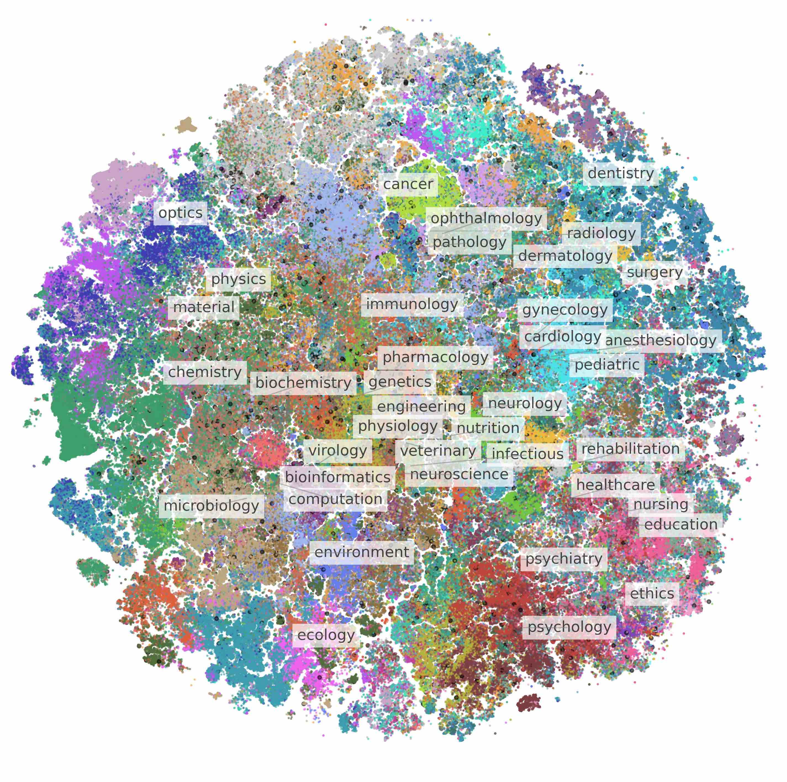

|
James Burgess I am a Stanford PhD student working on computer vision and machine learning. I'm fortunate to be advised by Serena Yeung-Levy and to be supported by the Quad Fellowship. My methods work focuses on vision-language models, agent-based systems, and evaluation. I also develop multimodal large language models for biology research. |

|
Research |

|
MicroVQA: A Multimodal Reasoning Benchmark for Microscopy-Based Scientific Research
James Burgess*, Jeffrey J Nirschl*, Laura Bravo-Sánchez*, Alejandro Lozano, Sanket Rajan Gupte, Jesus G. Galaz-Montoya, Yuhui Zhang, Yuchang Su, Disha Bhowmik, Zachary Coman, Sarina M. Hasan, Alexandra Johannesson, William D. Leineweber, Malvika G Nair, Ridhi Yarlagadda, Connor Zuraski, Wah Chiu, Sarah Cohen, Jan N. Hansen, Manuel D Leonetti, Chad Liu, Emma Lundberg, Serena Yeung-Levy CVPR 2025 project page & blog / arxiv / benchmark / code *co-first authorship MicroVQA is an expert-curated benchmark for research-level reasoning in biological microscopy. We also propose a method called RefineBot for removing language shortcuts from multiple-choice VQA. |
|

|
BIOMEDICA: An Open Biomedical Image-Caption Archive, Dataset, and Vision-Language Models Derived from Scientific Literature
Alejandro Lozano*, Min Woo Sun*, James Burgess*, Liangyu Chen, Jeffrey J. Nirschl, Jeffrey Gu, Ivan Lopez, Josiah Aklilu, Anita Rau, Austin Wolfgana Katzer, Collin Chiu, Xiaohan Wang, Alfred Seunghoon Song, Robert Tibshirani, Serena Yeung-Levy CVPR 2025 project page / arxiv / code / data *co-first authorship The BIOMEDICA dataset has 6 million scientific articles and 24 million image-text pairs for training vision-language models in biomedicine. We use it to train state-of-the-art embedding models for biomedical images. |

|
Video Action Differencing
James Burgess, Xiaohan Wang, Yuhui Zhang, Anita Rau, Alejandro Lozano, Lisa Dunlap, Trevor Darrell, Serena Yeung-Levy ICLR 2025 project page & blog / paper / benchmark / code We propose Video Action Differencing (VidDiff), a new task for detecting subtle variations in how actions are performed between two videos. We release a benchmark spaning diverse skilled actions, and a baseline method that is a simple agentic workflow. |

|
Viewpoint Textual Inversion: Discovering Scene Representations and 3D View Control in 2D Diffusion Models
James Burgess, Kuan-Chieh Wang, Serena Yeung-Levy ECCV 2024 Outstanding Paper Award at the ECCV Workshop "Emergent Visual Abilities and Limits of Foundation Models" project page / arXiv / code We show that 2D diffusion models like StableDiffusion have 3D control in their text input space which we call '3D view tokens'. |

|
Micro-Bench: A Vision-Language Benchmark for Microscopy Understanding
Alejandro Lozano*, Jeffrey Nirschl*, James Burgess, Sanket Rajan Gupte, Yuhui Zhang, Alyssa Unell, Serena Yeung-Levy NeurIPS Datasets & Benchmarks 2024 project page / arXiv / code *co-first authorship A Vision-Language Benchmark for Microscopy Understanding. |

|
Orientation-invariant autoencoders learn robust representations for shape profiling of cells and organelles
James Burgess, Jeffrey J. Nirschl, Maria-Clara Zanellati, Alejandro Lozano, Sarah Cohen, Serena Yeung-Levy Nature Communications 2024 paper / code Unsupervised shape representations of cells and organelles are erroneously sensitive to image orientation, which we mitigate with equivariant convolutional network encoders in our method, O2VAE. |

|
Global organelle profiling reveals subcellular localization and remodeling at proteome scale
Hein et. al. (including James Burgess) Cell 2024 bioRxiv / code A proteomics map of human subcellular architecture, led by the Chan-Zuckerberg Biohub. |
TeachingLecturer and teaching assistant, CS286/BIODS276 Advanced Topics in Computer Vision and Biomedicine, Stanford 2024. Teaching assistant, CS271/BIODS220, Artificial Intelligence in Healthcare, Stanford 2022. |
|
I stole this website template from Jon Barron who published his source code here. |